Dr. Chen's 300-protein interaction network, from a plain first render to fold change as color, degree as size, modules as categories and a shortest path marked on top. Each state is the whole app at 1440 x 900. The flow shows how the states connect. The data is the kit's protein network: 300 proteins, 1,262 interactions, log2 fold change from -2.52 to 3.15.
Tree in a ControlSection.Popout.Panel with PopoutHeaderConfig, ToggleIconButton.ControlSection (empty-state variant), FieldRow, CompactColorInput.Popout nested picker, SearchInput, ResultRow.ResultRow.Tree row.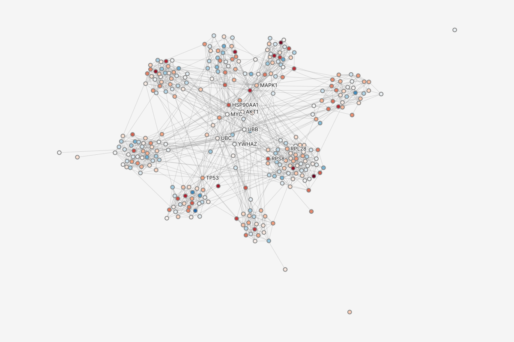
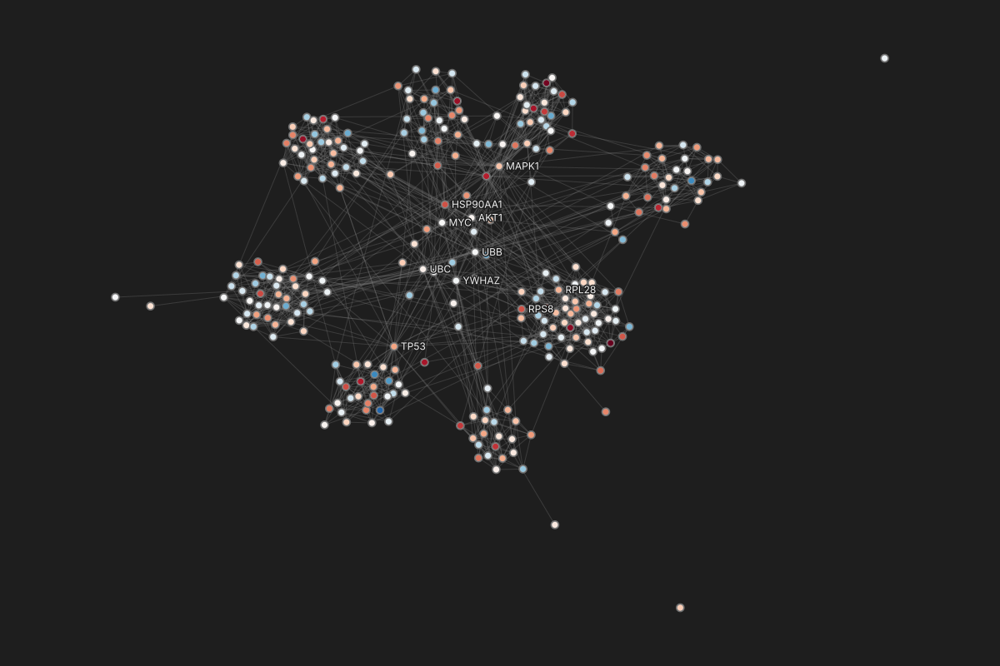
Tree row with a ramp in the icon slot (canvas-drawing.md 3 chip).FieldRow, VariablePill, TrailingSlot.Button in the Popout header.StyleSelect, RampRow with GradientEditor, HistogramRow.ProseBlock.DataRow.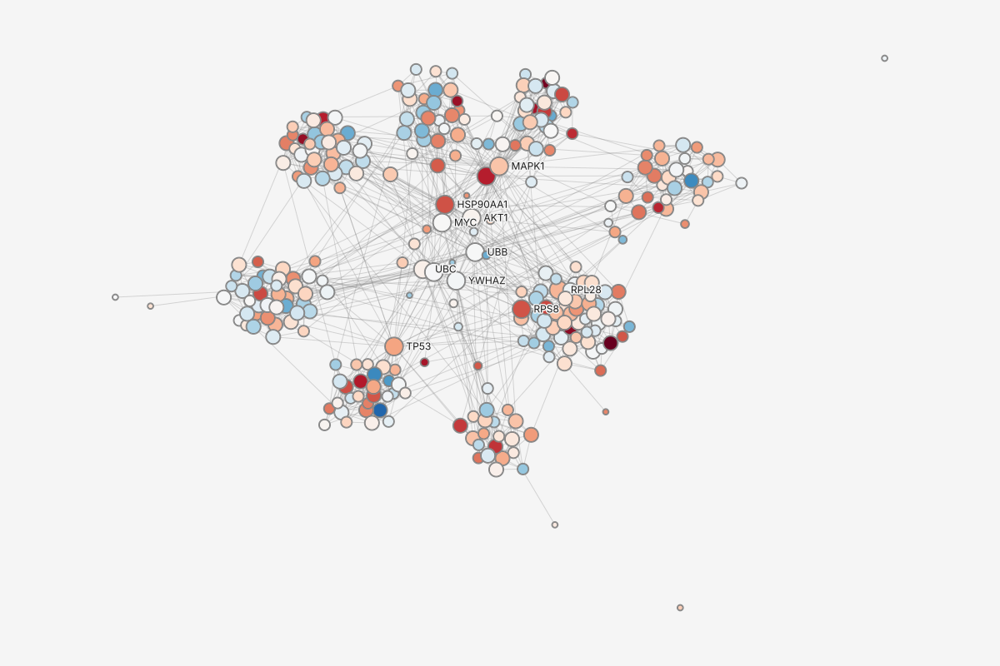
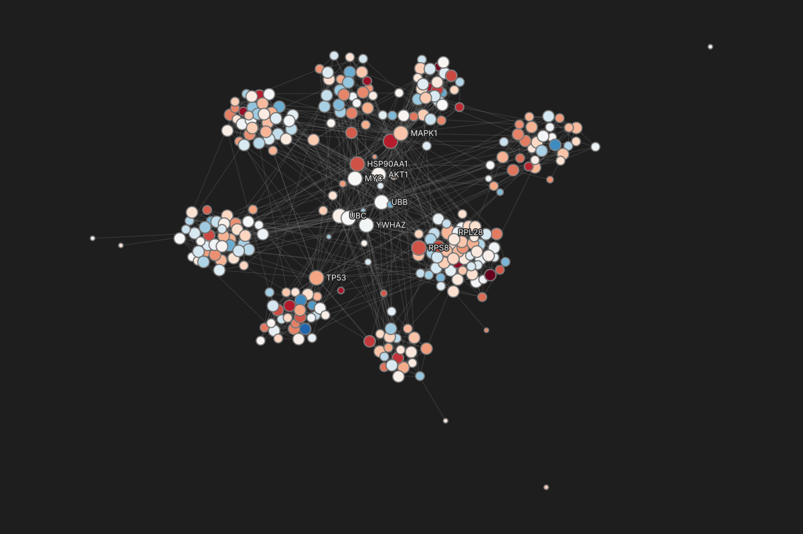
ActionRow, SearchInput.Popout.Panel, TrailingSlot, ProseBlock.Tree-style row with ToggleIconButton, ProseBlock.ActionRow.DataRow, ActionRow.Popout nested slot.StyleSelect, StyleNumberInput, DataRow.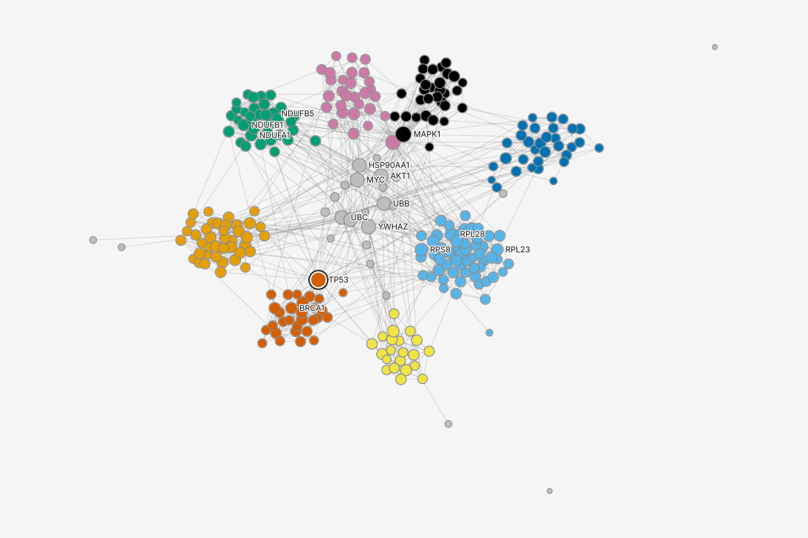
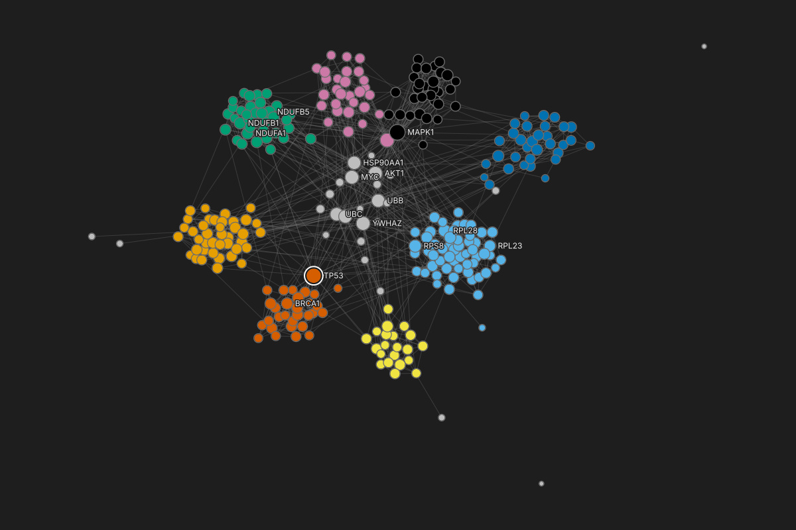
| id | module 9 values | degree 0 to 34 | log2FoldChange -2.52 to 3.15 |
|---|---|---|---|
| MAPK1 | MAPK signaling | 34 | -0.52 |
| TP53 | DNA repair | 32 | -0.84 |
| CDK1 | Cell cycle | 25 | -1.92 |
| YWHAZ | Unassigned | 24 | 0.44 |
| AKT1 | Unassigned | 24 | 0.22 |
| MYC | Unassigned | 23 | 0.34 |
| HSP90AA1 | Unassigned | 21 | -1.51 |
Tree.Tree row.StyleSelect.DataRow with CompactColorInput.Menu.FieldRow with ControlGroup legend and VariablePill.DataTable header menu.Popout.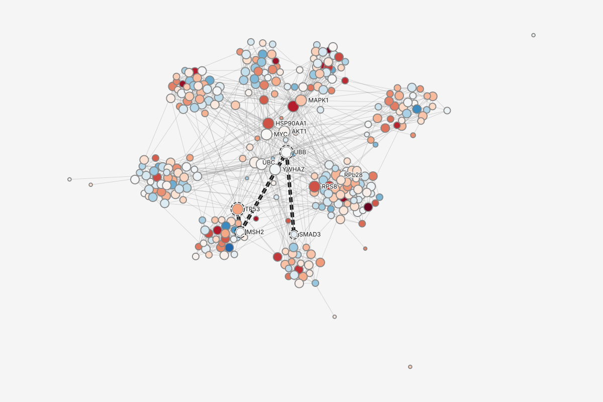
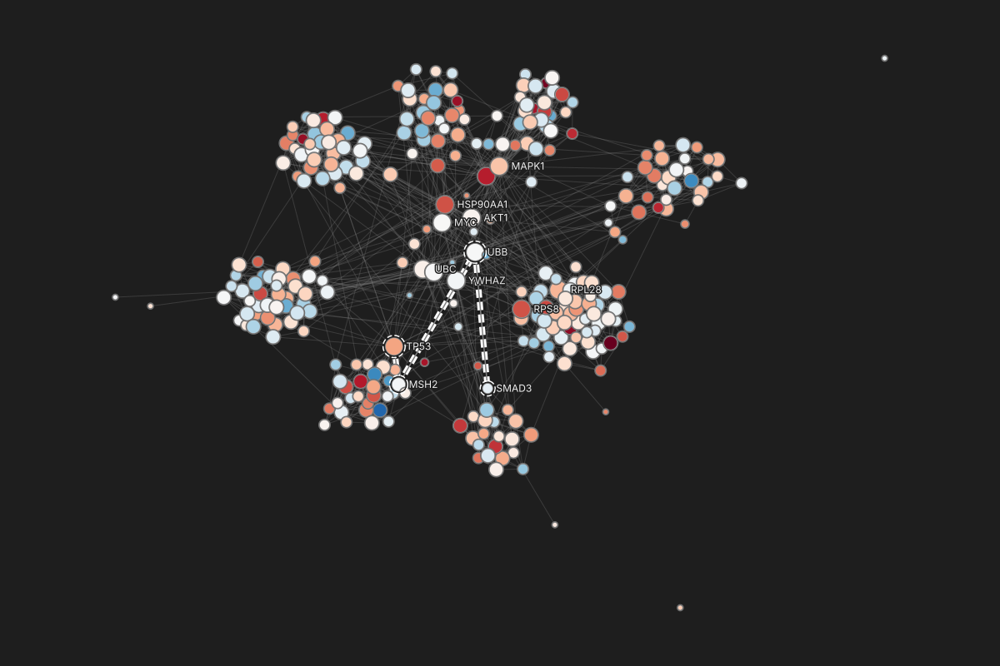
Tree row, TrailingSlot.ToggleIconButton.FieldRow, read-only.FieldRow.ProseBlock.ControlSection, Popout.ResultRow.graphty.style.cannotBind; options-and-encodings.md 4; see framework-changes.md. compact-mantine: ResultRow disabled, with a secondary line.CompactColorInput.ColorPickerPanel.SWATCH_COLORS_HEXA, set by the caller. On the graphty-element backlog.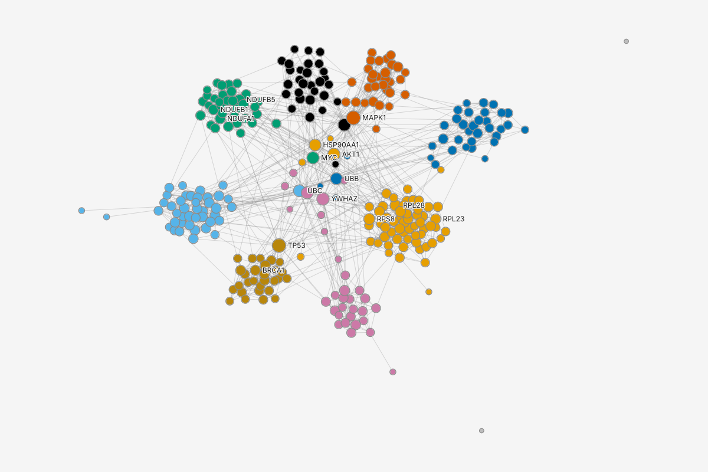
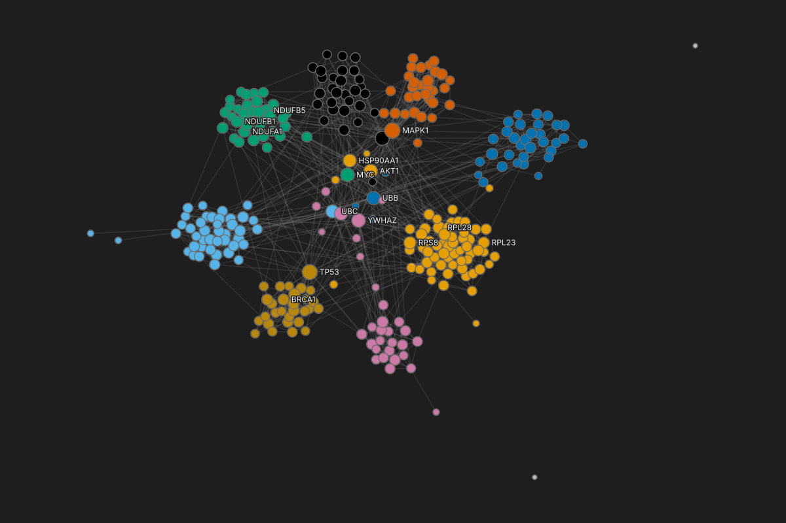
CompactColorInput.Notification.FieldRow, ProseBlock.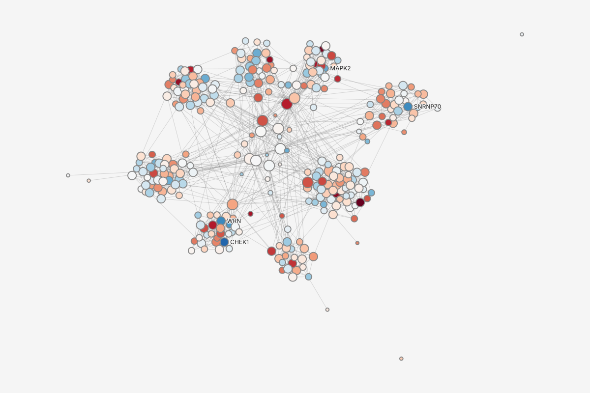
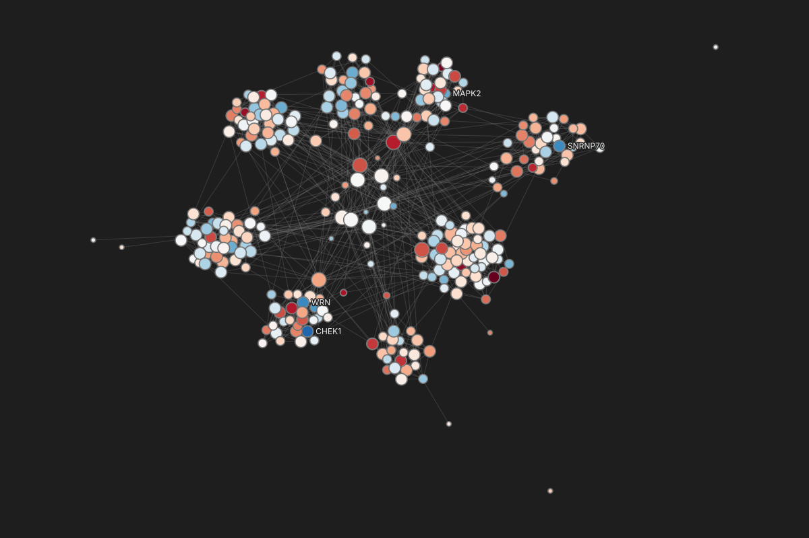
ControlSection, StyleSelect, StyleNumberInput.StyleSelect.Menu with a label row.DataRow.Everything below is drawn on this page as graphty-element behavior. The app only shows what the element reports; a third party using graphty-element on its own gets the same checks, suggestions, directions and floors.